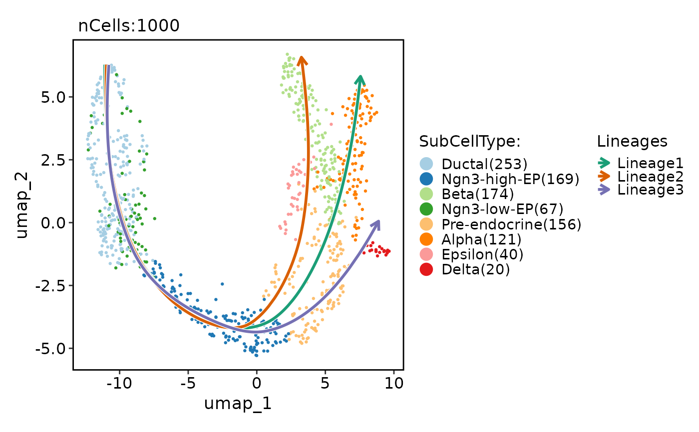
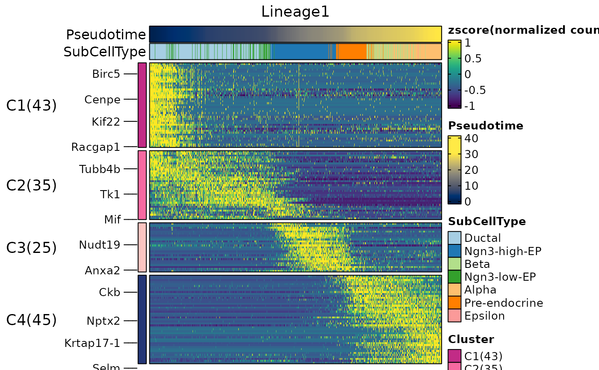
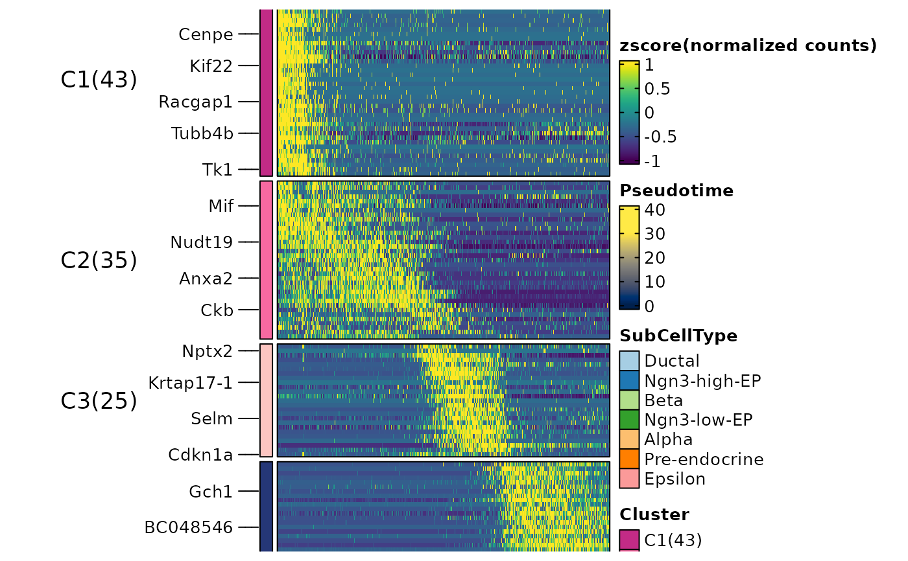
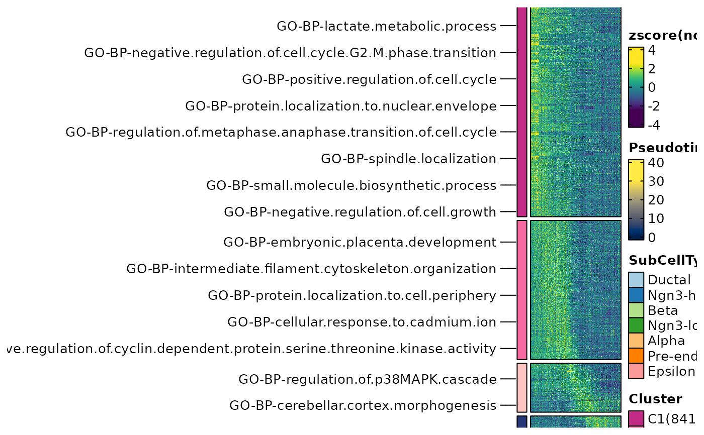

This function calculates gene-set scores from the specified database (db) for each lineage using the specified scoring method (score_method).
It then treats these scores as expression values and uses them as input to the RunDynamicFeatures function to identify dynamically enriched terms along the lineage.
Usage
RunDynamicEnrichment(
srt,
lineages,
score_method = "AUCell",
layer = "data",
assay = NULL,
min_expcells = 20,
r.sq = 0.2,
dev.expl = 0.2,
padjust = 0.05,
IDtype = "symbol",
species = "Homo_sapiens",
db = "GO_BP",
db_update = FALSE,
db_version = "latest",
convert_species = TRUE,
Ensembl_version = 103,
mirror = NULL,
TERM2GENE = NULL,
TERM2NAME = NULL,
minGSSize = 10,
maxGSSize = 500,
cores = 1,
verbose = TRUE,
seed = 11
)Arguments
- srt
A Seurat object containing the results of differential expression analysis (RunDEtest). If specified, the genes and groups will be extracted from the Seurat object automatically. If not specified, the
geneIDandgeneID_groupsarguments must be provided.- lineages
A character vector specifying the lineages to plot.
- score_method
The method to use for scoring. Can be
"Seurat","AUCell", or"UCell". Defaults to"Seurat".- layer
A character vector specifying the layer in the Seurat object to use. Default is "counts".
- assay
A character vector specifying the assay in the Seurat object to use. Default is NULL.
- min_expcells
A numeric value specifying the minimum number of expected cells. Default is 20.
- r.sq
A numeric value specifying the R-squared threshold. Default is 0.2.
- dev.expl
A numeric value specifying the deviance explained threshold. Default is 0.2.
- padjust
A numeric value specifying the p-value adjustment threshold. Default is 0.05.
- IDtype
A character vector specifying the type of gene IDs in the
srtobject orgeneIDargument. This argument is used to convert the gene IDs to a different type ifIDtypeis different fromresult_IDtype.- species
A character vector specifying the species for which the analysis is performed.
- db
A character vector specifying the name of the database to be used for enrichment analysis.
- db_update
A logical value indicating whether the gene annotation databases should be forcefully updated. If set to FALSE, the function will attempt to load the cached databases instead. Default is FALSE.
- db_version
A character vector specifying the version of the database to be used. This argument is ignored if
db_updateisTRUE. Default is "latest".- convert_species
A logical value indicating whether to use a species-converted database when the annotation is missing for the specified species. The default value is TRUE.
- Ensembl_version
Ensembl database version. If NULL, use the current release version.
- mirror
Specify an Ensembl mirror to connect to. The valid options here are
"www","uswest","useast","asia".- TERM2GENE
A data frame specifying the gene-term mapping for a custom database. The first column should contain the term IDs, and the second column should contain the gene IDs.
- TERM2NAME
A data frame specifying the term-name mapping for a custom database. The first column should contain the term IDs, and the second column should contain the corresponding term names.
- minGSSize
A numeric value specifying the minimum size of a gene set to be considered in the enrichment analysis.
- maxGSSize
A numeric value specifying the maximum size of a gene set to be considered in the enrichment analysis.
- cores
The number of cores to use for parallelization with foreach::foreach. Default is
1.- verbose
Whether to print the message. Default is
TRUE.- seed
An integer specifying the random seed. Default is 11.
Examples
data(pancreas_sub)
pancreas_sub <- standard_scop(pancreas_sub)
#> ℹ [2025-09-12 10:40:00] Start standard scop workflow...
#> ℹ [2025-09-12 10:40:01] Checking a list of <Seurat> objects...
#> ! [2025-09-12 10:40:01] Data 1/1 of the `srt_list` is "unknown"
#> ℹ [2025-09-12 10:40:01] Perform `NormalizeData()` with `normalization.method = 'LogNormalize'` on the data 1/1 of the `srt_list`...
#> ℹ [2025-09-12 10:40:03] Perform `Seurat::FindVariableFeatures()` on the data 1/1 of the `srt_list`...
#> ℹ [2025-09-12 10:40:04] Use the separate HVF from srt_list
#> ℹ [2025-09-12 10:40:04] Number of available HVF: 2000
#> ℹ [2025-09-12 10:40:04] Finished check
#> ℹ [2025-09-12 10:40:04] Perform `Seurat::ScaleData()` on the data...
#> Warning: Different features in new layer data than already exists for scale.data
#> ℹ [2025-09-12 10:40:05] Perform pca linear dimension reduction on the data...
#> StandardPC_ 1
#> Positive: Aplp1, Cpe, Gnas, Fam183b, Map1b, Hmgn3, Pcsk1n, Chga, Tuba1a, Bex2
#> Syt13, Isl1, 1700086L19Rik, Pax6, Chgb, Scgn, Rbp4, Scg3, Gch1, Camk2n1
#> Cryba2, Pcsk2, Pyy, Tspan7, Mafb, Hist3h2ba, Dbpht2, Abcc8, Rap1b, Slc38a5
#> Negative: Spp1, Anxa2, Sparc, Dbi, 1700011H14Rik, Wfdc2, Gsta3, Adamts1, Clu, Mgst1
#> Bicc1, Ldha, Vim, Cldn3, Cyr61, Rps2, Mt1, Ptn, Phgdh, Nudt19
#> Smtnl2, Smco4, Habp2, Mt2, Col18a1, Rpl12, Galk1, Cldn10, Acot1, Ccnd1
#> StandardPC_ 2
#> Positive: Rbp4, Tagln2, Tuba1b, Fkbp2, Pyy, Pcsk2, Iapp, Tmem27, Meis2, Tubb4b
#> Pcsk1n, Dbpht2, Rap1b, Dynll1, Tubb2a, Sdf2l1, Scgn, 1700086L19Rik, Scg2, Abcc8
#> Atp1b1, Hspa5, Fam183b, Papss2, Slc38a5, Scg3, Mageh1, Tspan7, Ppp1r1a, Ociad2
#> Negative: Neurog3, Btbd17, Gadd45a, Ppp1r14a, Neurod2, Sox4, Smarcd2, Mdk, Pax4, Btg2
#> Sult2b1, Hes6, Grasp, Igfbpl1, Gpx2, Cbfa2t3, Foxa3, Shf, Mfng, Tmsb4x
#> Amotl2, Gdpd1, Cdc14b, Epb42, Rcor2, Cotl1, Upk3bl, Rbfox3, Cldn6, Cer1
#> StandardPC_ 3
#> Positive: Nusap1, Top2a, Birc5, Aurkb, Cdca8, Pbk, Mki67, Tpx2, Plk1, Ccnb1
#> 2810417H13Rik, Incenp, Cenpf, Ccna2, Prc1, Racgap1, Cdk1, Aurka, Cdca3, Hmmr
#> Spc24, Kif23, Sgol1, Cenpe, Cdc20, Hist1h1b, Cdca2, Mxd3, Kif22, Ska1
#> Negative: Anxa5, Pdzk1ip1, Acot1, Tpm1, Anxa2, Dcdc2a, Capg, Sparc, Ttr, Pamr1
#> Clu, Cxcl12, Ndrg2, Hnf1aos1, Gas6, Gsta3, Krt18, Ces1d, Atp1b1, Muc1
#> Hhex, Acadm, Spp1, Enpp2, Bcl2l14, Sat1, Smtnl2, 1700011H14Rik, Tgm2, Fam159a
#> StandardPC_ 4
#> Positive: Glud1, Tm4sf4, Akr1c19, Cldn4, Runx1t1, Fev, Pou3f4, Gm43861, Pgrmc1, Arx
#> Cd200, Lrpprc, Hmgn3, Ppp1r14c, Pam, Etv1, Tsc22d1, Slc25a5, Akap17b, Pgf
#> Fam43a, Emb, Jun, Krt8, Dnajc12, Mid1ip1, Ids, Rgs17, Uchl1, Alcam
#> Negative: Ins2, Ins1, Ppp1r1a, Nnat, Calr, Sytl4, Sdf2l1, Iapp, Pdia6, Mapt
#> G6pc2, C2cd4b, Npy, Gng12, P2ry1, Ero1lb, Adra2a, Papss2, Arhgap36, Fam151a
#> Dlk1, Creld2, Gip, Tmem215, Gm27033, Cntfr, Prss53, C2cd4a, Lyve1, Ociad2
#> StandardPC_ 5
#> Positive: Pdx1, Nkx6-1, Npepl1, Cldn4, Cryba2, Fev, Jun, Chgb, Gng12, Adra2a
#> Mnx1, Sytl4, Pdk3, Gm27033, Nnat, Chga, Ins2, 1110012L19Rik, Enho, Krt7
#> Mlxipl, Tmsb10, Flrt1, Pax4, Tubb3, Prrg2, Gars, Frzb, BC023829, Gm2694
#> Negative: Irx2, Irx1, Gcg, Ctxn2, Tmem27, Ctsz, Tmsb15l, Nap1l5, Pou6f2, Gria2
#> Ghrl, Peg10, Smarca1, Arx, Lrpap1, Rgs4, Ttr, Gast, Tmsb15b2, Serpina1b
#> Slc16a10, Wnk3, Ly6e, Auts2, Sct, Arg1, Dusp10, Sphkap, Dock11, Edn3
#> ℹ [2025-09-12 10:40:06] Perform `Seurat::FindClusters()` with louvain and `cluster_resolution` = 0.6 on the data...
#> ℹ [2025-09-12 10:40:06] Reorder clusters...
#> ! [2025-09-12 10:40:06] Using `Seurat::AggregateExpression()` to calculate pseudo-bulk data for <Assay5>
#> ℹ [2025-09-12 10:40:06] Perform umap nonlinear dimension reduction on the data...
#> ℹ [2025-09-12 10:40:06] Non-linear dimensionality reduction (umap) using (Standardpca) dims (1-50) as input
#> ℹ [2025-09-12 10:40:10] Non-linear dimensionality reduction (umap) using (Standardpca) dims (1-50) as input
#> ✔ [2025-09-12 10:40:15] Run scop standard workflow done
pancreas_sub <- RunSlingshot(
pancreas_sub,
group.by = "SubCellType",
reduction = "UMAP"
)
#> Warning: No shared levels found between `names(values)` of the manual scale and the
#> data's fill values.
#> Warning: No shared levels found between `names(values)` of the manual scale and the
#> data's fill values.
#> Warning: Removed 8 rows containing missing values or values outside the scale range
#> (`geom_path()`).
#> Warning: Removed 8 rows containing missing values or values outside the scale range
#> (`geom_path()`).

pancreas_sub <- RunDynamicFeatures(
pancreas_sub,
lineages = "Lineage1",
n_candidates = 200
)
#> ℹ [2025-09-12 10:40:17] Start find dynamic features
#> ℹ [2025-09-12 10:40:17] Installing package: mgcv...
#>
#>
#> ℹ No downloads are needed
#> ✔ 1 pkg + 3 deps: kept 3 [835ms]
#> ℹ [2025-09-12 10:40:18] All packages installed successfully
#> ℹ [2025-09-12 10:40:18] Data type is raw counts
#> ℹ [2025-09-12 10:40:19] Number of candidate features (union): 200
#> ℹ [2025-09-12 10:40:20] Data type is raw counts
#> ℹ [2025-09-12 10:40:20] Calculating dynamic features for "Lineage1"...
#> ℹ [2025-09-12 10:40:20] Using 1 core
#> ⠙ [2025-09-12 10:40:20] Running [1/200] ETA: 8s
#> ⠹ [2025-09-12 10:40:20] Running [90/200] ETA: 4s
#> ⠸ [2025-09-12 10:40:20] Running [179/200] ETA: 1s
#> ✔ [2025-09-12 10:40:20] Completed 200 tasks in 6.7s
#>
#> ℹ [2025-09-12 10:40:27] Building results
#> ✔ [2025-09-12 10:40:27] Find dynamic features done
ht1 <- DynamicHeatmap(
pancreas_sub,
lineages = "Lineage1",
cell_annotation = "SubCellType",
n_split = 4
)
#> ℹ [2025-09-12 10:40:27] 148 features from Lineage1 passed the threshold (exp_ncells>20 & r.sq>0.2 & dev.expl>0.2 & padjust<0.05):
#> ℹ Iapp,Pyy,Rbp4,Chgb,Slc38a5,Lrpprc,Cck,Chga,2810417H13Rik,Cdc20...
#> ℹ [2025-09-12 10:40:27] Installing package: e1071...
#>
#>
#> ℹ No downloads are needed
#> ✔ 1 pkg + 3 deps: kept 4 [603ms]
#> ℹ [2025-09-12 10:40:28] All packages installed successfully
#> 'magick' package is suggested to install to give better rasterization.
#>
#> Set `ht_opt$message = FALSE` to turn off this message.
#> ℹ [2025-09-12 10:40:28]
#> ℹ The size of the heatmap is fixed because certain elements are not scalable.
#> ℹ The width and height of the heatmap are determined by the size of the current viewport.
#> ℹ If you want to have more control over the size, you can manually set the parameters 'width' and 'height'.

ht1$plot

pancreas_sub <- RunDynamicEnrichment(
pancreas_sub,
lineages = "Lineage1",
score_method = "UCell",
db = "GO_BP",
species = "Mus_musculus"
)
#> ℹ [2025-09-12 10:40:29] Species: Mus_musculus
#> ℹ [2025-09-12 10:40:29] Loading cached: GO_BP version: 3.21.0 nterm:15445 created: "2025-09-12 10:09:18"
#> ℹ [2025-09-12 10:40:32] Start cell scoring
#> ℹ [2025-09-12 10:40:32] Data type is log-normalized
#> ℹ [2025-09-12 10:40:33] Number of feature lists to be scored: 2817
#> ℹ [2025-09-12 10:40:33] Installing package: UCell...
#>
#> → Will install 1 package.
#> → The package (0 B) is cached.
#> + UCell 2.12.0 [bld]
#> ✔ All system requirements are already installed.
#>
#> ℹ No downloads are needed, 1 pkg is cached
#> ✔ Got UCell 2.12.0 (source) (1.76 MB)
#> ℹ Installing system requirements
#> ℹ Executing `sudo sh -c apt-get -y update`
#> Get:1 file:/etc/apt/apt-mirrors.txt Mirrorlist [144 B]
#> Hit:6 https://packages.microsoft.com/repos/azure-cli noble InRelease
#> Hit:7 https://packages.microsoft.com/ubuntu/24.04/prod noble InRelease
#> Hit:2 http://azure.archive.ubuntu.com/ubuntu noble InRelease
#> Hit:3 http://azure.archive.ubuntu.com/ubuntu noble-updates InRelease
#> Hit:4 http://azure.archive.ubuntu.com/ubuntu noble-backports InRelease
#> Hit:5 http://azure.archive.ubuntu.com/ubuntu noble-security InRelease
#> Reading package lists...
#> ℹ Executing `sudo sh -c apt-get -y install libcurl4-openssl-dev libssl-dev`
#> Reading package lists...
#> Building dependency tree...
#> Reading state information...
#> libcurl4-openssl-dev is already the newest version (8.5.0-2ubuntu10.6).
#> libssl-dev is already the newest version (3.0.13-0ubuntu3.5).
#> 0 upgraded, 0 newly installed, 0 to remove and 16 not upgraded.
#> ℹ Building UCell 2.12.0
#> ✔ Built UCell 2.12.0 (11.1s)
#> ✔ Installed UCell 2.12.0 (1s)
#> ✔ 1 pkg + 39 deps: kept 38, added 1, dld 1 (1.76 MB) [15.9s]
#> ℹ [2025-09-12 10:40:49] All packages installed successfully
#> Warning: Feature names cannot have underscores ('_'), replacing with dashes ('-')
#> Warning: Feature names cannot have underscores ('_'), replacing with dashes ('-')
#> ✔ [2025-09-12 10:42:35] Cell scoring completed
#> ℹ [2025-09-12 10:42:35] Start find dynamic features
#> ℹ [2025-09-12 10:42:35] Installing package: mgcv...
#>
#>
#> ℹ No downloads are needed
#> ✔ 1 pkg + 3 deps: kept 3 [622ms]
#> ℹ [2025-09-12 10:42:35] All packages installed successfully
#> ℹ [2025-09-12 10:42:35] Get expression data from <Assay> object
#> ℹ [2025-09-12 10:42:36] Data type is log-normalized
#> ℹ [2025-09-12 10:42:36] Number of candidate features (union): 2817
#> ℹ [2025-09-12 10:42:37] Data type is log-normalized
#> ℹ [2025-09-12 10:42:37] Calculating dynamic features for "Lineage1"...
#> ℹ [2025-09-12 10:42:37] Using 1 core
#> ⠙ [2025-09-12 10:42:37] Running [1/2817] ETA: 1m
#> ⠹ [2025-09-12 10:42:37] Running [128/2817] ETA: 27s
#> ⠸ [2025-09-12 10:42:37] Running [460/2817] ETA: 22s
#> ⠼ [2025-09-12 10:42:37] Running [780/2817] ETA: 19s
#> ⠴ [2025-09-12 10:42:37] Running [1098/2817] ETA: 16s
#> ⠦ [2025-09-12 10:42:37] Running [1410/2817] ETA: 13s
#> ⠧ [2025-09-12 10:42:37] Running [1724/2817] ETA: 10s
#> ⠇ [2025-09-12 10:42:37] Running [2044/2817] ETA: 7s
#> ⠏ [2025-09-12 10:42:37] Running [2353/2817] ETA: 4s
#> ⠋ [2025-09-12 10:42:37] Running [2662/2817] ETA: 1s
#> ✔ [2025-09-12 10:42:37] Completed 2817 tasks in 26.7s
#>
#> ℹ [2025-09-12 10:43:03] Building results
#> ✔ [2025-09-12 10:43:03] Find dynamic features done
#> ✔ [2025-09-12 10:43:03] Dynamic enrichment analysis completed
ht2 <- DynamicHeatmap(
pancreas_sub,
assay = "GO_BP",
lineages = "Lineage1_GO_BP",
cell_annotation = "SubCellType",
n_split = 4,
split_method = "kmeans-peaktime"
)
#> ℹ [2025-09-12 10:43:04] Get expression data from <Assay> object
#> ℹ [2025-09-12 10:43:04] 1889 features from Lineage1_GO_BP passed the threshold (exp_ncells>20 & r.sq>0.2 & dev.expl>0.2 & padjust<0.05):
#> ℹ GO-BP-2..deoxyribonucleotide.biosynthetic.process,GO-BP-2..deoxyribonucleotide.metabolic.process,GO-BP-ATP.biosynthetic.process,GO-BP-ATP.metabolic.process,GO-BP-ATP.synthesis.coupled.electron.transport,GO-BP-B.cell.activation,GO-BP-B.cell.apoptotic.process,GO-BP-B.cell.differentiation,GO-BP-B.cell.proliferation,GO-BP-BMP.signaling.pathway...
#> ℹ [2025-09-12 10:43:04] Get expression data from <Assay> object
#> ℹ [2025-09-12 10:43:04] Get expression data from <Assay> object
#> ! [2025-09-12 10:43:04] The values in the 'counts' layer are non-integer. Set the library size to 1.
#> 'magick' package is suggested to install to give better rasterization.
#>
#> Set `ht_opt$message = FALSE` to turn off this message.
#> ℹ [2025-09-12 10:43:05]
#> ℹ The size of the heatmap is fixed because certain elements are not scalable.
#> ℹ The width and height of the heatmap are determined by the size of the current viewport.
#> ℹ If you want to have more control over the size, you can manually set the parameters 'width' and 'height'.
ht2$plot
